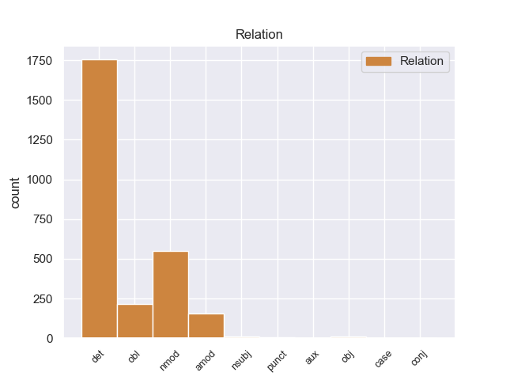
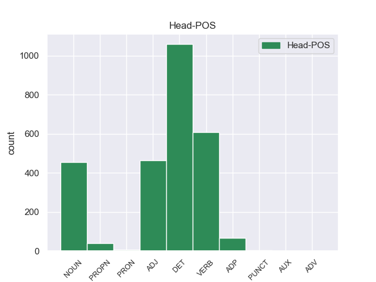
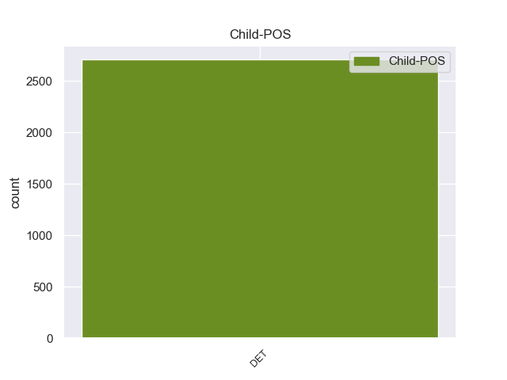

Distribution of features within this leaf



Agreement Rules sorted by frequency.
When the dependent token is None
1 Αυτό _ _ _ _ 0 _ _ _
2 μπορεί _ _ _ _ 0 _ _ _
3 να _ _ _ _ 0 _ _ _
4 μην _ _ _ _ 0 _ _ _
5 οδηγήσει _ _ _ _ 0 _ _ _
6 σ _ _ _ _ 0 _ _ _
7 τη _ _ _ _ 0 _ _ _
8 λήξη _ _ _ _ 0 _ _ _
9 του _ _ _ _ 0 _ _ _
10 εν _ _ _ _ 0 _ _ _
11 λόγω _ _ _ _ 0 _ _ _
12 ζητήματος _ _ _ _ 0 _ _ _
13 αλλά _ _ _ _ 0 _ _ _
14 , _ _ _ _ 0 _ _ _
15 σ _ _ _ _ 0 _ _ _
16 τη _ _ _ _ 0 _ _ _
17 μορφή _ _ _ _ 0 _ _ _
18 υπό _ _ _ _ 0 _ _ _
19 την _ _ _ _ 0 _ _ _
20 οποία _ _ _ _ 0 _ _ _
21 την _ _ _ _ 0 _ _ _
22 λάβαμε _ _ _ _ 0 _ _ _
23 , _ _ _ _ 0 _ _ _
24 αυτή _ _ _ _ 0 _ _ _
25 η _ _ _ _ 0 _ _ _
26 αίτηση _ _ _ _ 0 _ _ _
27 άρσης _ _ _ _ 0 _ _ _
28 της _ _ _ _ 0 _ _ _
29 ασυλίας _ _ _ _ 0 _ _ _
30 ήταν _ _ _ _ 0 _ _ _
31 , _ _ _ _ 0 _ _ _
32 κατά _ _ _ _ 0 _ _ _
33 την _ _ _ _ 0 _ _ _
34 άποψη _ _ _ _ 0 _ _ _
35 της ο DET _ Case=Gen|Definite=Def|Gender=Fem|Number=Sing|PronType=Art 36 det _ _
36 Επιτροπής επιτροπής DET _ Case=Acc|Gender=Fem|Number=Sing 0 _ _ _
37 Νομικών _ _ _ _ 0 _ _ _
38 Θεμάτων _ _ _ _ 0 _ _ _
39 , _ _ _ _ 0 _ _ _
40 απαράδεκτη _ _ _ _ 0 _ _ _
41 , _ _ _ _ 0 _ _ _
42 άποψη _ _ _ _ 0 _ _ _
43 την _ _ _ _ 0 _ _ _
44 οποία _ _ _ _ 0 _ _ _
45 συνιστώ _ _ _ _ 0 _ _ _
46 σ _ _ _ _ 0 _ _ _
47 το _ _ _ _ 0 _ _ _
48 Σώμα _ _ _ _ 0 _ _ _
49 να _ _ _ _ 0 _ _ _
50 υιοθετήσει _ _ _ _ 0 _ _ _
51 . _ _ _ _ 0 _ _ _
Disagree Examples:
1 Όσον _ _ _ _ 0 _ _ _
2 αφορά _ _ _ _ 0 _ _ _
3 τη _ _ _ _ 0 _ _ _
4 διεθνή _ _ _ _ 0 _ _ _
5 δράση _ _ _ _ 0 _ _ _
6 της _ _ _ _ 0 _ _ _
7 Ευρωπαϊκής _ _ _ _ 0 _ _ _
8 Ένωσης _ _ _ _ 0 _ _ _
9 θεωρώ θεωρώ ADP _ Case=Acc|Gender=Fem|Number=Sing 0 _ _ _
10 ότι _ _ _ _ 0 _ _ _
11 , _ _ _ _ 0 _ _ _
12 πέρα _ _ _ _ 0 _ _ _
13 από _ _ _ _ 0 _ _ _
14 την _ _ _ _ 0 _ _ _
15 αναγκαιότητα _ _ _ _ 0 _ _ _
16 να _ _ _ _ 0 _ _ _
17 συνεχίσουμε _ _ _ _ 0 _ _ _
18 τις _ _ _ _ 0 _ _ _
19 προσπάθειες _ _ _ _ 0 _ _ _
20 σ _ _ _ _ 0 _ _ _
21 τη _ _ _ _ 0 _ _ _
22 Μέση _ _ _ _ 0 _ _ _
23 Ανατολή _ _ _ _ 0 _ _ _
24 και _ _ _ _ 0 _ _ _
25 να _ _ _ _ 0 _ _ _
26 δώσουμε _ _ _ _ 0 _ _ _
27 νέα _ _ _ _ 0 _ _ _
28 ώθηση _ _ _ _ 0 _ _ _
29 σ _ _ _ _ 0 _ _ _
30 την _ _ _ _ 0 _ _ _
31 ευρωμεσογειακή _ _ _ _ 0 _ _ _
32 διαδικασία _ _ _ _ 0 _ _ _
33 , _ _ _ _ 0 _ _ _
34 η _ _ _ _ 0 _ _ _
35 Λατινική _ _ _ _ 0 _ _ _
36 Αμερική _ _ _ _ 0 _ _ _
37 , _ _ _ _ 0 _ _ _
38 και _ _ _ _ 0 _ _ _
39 η _ _ _ _ 0 _ _ _
40 Αργεντινή _ _ _ _ 0 _ _ _
41 ιδιαιτέρως _ _ _ _ 0 _ _ _
42 , _ _ _ _ 0 _ _ _
43 κατέχουν _ _ _ _ 0 _ _ _
44 το _ _ _ _ 0 _ _ _
45 επίκεντρο επίκεντρος DET _ Case=Acc|Gender=Fem|Number=Plur 9 obl _ _
46 της _ _ _ _ 0 _ _ _
47 επικαιρότητας _ _ _ _ 0 _ _ _
48 . _ _ _ _ 0 _ _ _
1 Πρέπει _ _ _ _ 0 _ _ _
2 να _ _ _ _ 0 _ _ _
3 χρησιμοποιούμε _ _ _ _ 0 _ _ _
4 σωστά _ _ _ _ 0 _ _ _
5 το _ _ _ _ 0 _ _ _
6 χρήμα _ _ _ _ 0 _ _ _
7 - _ _ _ _ 0 _ _ _
8 φυσικά _ _ _ _ 0 _ _ _
9 για _ _ _ _ 0 _ _ _
10 την _ _ _ _ 0 _ _ _
11 αύξηση _ _ _ _ 0 _ _ _
12 των _ _ _ _ 0 _ _ _
13 υποδομών _ _ _ _ 0 _ _ _
14 , _ _ _ _ 0 _ _ _
15 για _ _ _ _ 0 _ _ _
16 την _ _ _ _ 0 _ _ _
17 παροχή παροχή VERB _ Case=Acc|Gender=Fem|Number=Sing 0 _ _ _
18 καλύτερων _ _ _ _ 0 _ _ _
19 υπηρεσιών _ _ _ _ 0 _ _ _
20 και _ _ _ _ 0 _ _ _
21 για _ _ _ _ 0 _ _ _
22 τη _ _ _ _ 0 _ _ _
23 μεγαλύτερη _ _ _ _ 0 _ _ _
24 δυνατή _ _ _ _ 0 _ _ _
25 αύξηση _ _ _ _ 0 _ _ _
26 της _ _ _ _ 0 _ _ _
27 τοπικής _ _ _ _ 0 _ _ _
28 απασχόλησης _ _ _ _ 0 _ _ _
29 - _ _ _ _ 0 _ _ _
30 δεν _ _ _ _ 0 _ _ _
31 πρέπει _ _ _ _ 0 _ _ _
32 όμως _ _ _ _ 0 _ _ _
33 να _ _ _ _ 0 _ _ _
34 χρησιμοποιείται _ _ _ _ 0 _ _ _
35 απλώς _ _ _ _ 0 _ _ _
36 ως _ _ _ _ 0 _ _ _
37 υποκατάστατο _ _ _ _ 0 _ _ _
38 για _ _ _ _ 0 _ _ _
39 τις _ _ _ _ 0 _ _ _
40 ιδιωτικές _ _ _ _ 0 _ _ _
41 και _ _ _ _ 0 _ _ _
42 άλλες _ _ _ _ 0 _ _ _
43 επενδύσεις _ _ _ _ 0 _ _ _
44 ή _ _ _ _ 0 _ _ _
45 για _ _ _ _ 0 _ _ _
46 άλλες ο DET _ Case=Acc|Gender=Fem|Number=Plur 17 det _ _
47 πρωτοβουλίες _ _ _ _ 0 _ _ _
48 δημιουργίας _ _ _ _ 0 _ _ _
49 τοπικών _ _ _ _ 0 _ _ _
50 θέσεων _ _ _ _ 0 _ _ _
51 απασχόλησης _ _ _ _ 0 _ _ _
52 . _ _ _ _ 0 _ _ _
1 Θεωρώ _ _ _ _ 0 _ _ _
2 ότι _ _ _ _ 0 _ _ _
3 , _ _ _ _ 0 _ _ _
4 ως _ _ _ _ 0 _ _ _
5 προς _ _ _ _ 0 _ _ _
6 αυτό _ _ _ _ 0 _ _ _
7 , _ _ _ _ 0 _ _ _
8 μπορούμε _ _ _ _ 0 _ _ _
9 να _ _ _ _ 0 _ _ _
10 ακολουθήσουμε _ _ _ _ 0 _ _ _
11 το _ _ _ _ 0 _ _ _
12 υπόδειγμα _ _ _ _ 0 _ _ _
13 της _ _ _ _ 0 _ _ _
14 Επιτροπής _ _ _ _ 0 _ _ _
15 για _ _ _ _ 0 _ _ _
16 τις _ _ _ _ 0 _ _ _
17 αδελφοποιήσεις _ _ _ _ 0 _ _ _
18 πόλεων _ _ _ _ 0 _ _ _
19 και _ _ _ _ 0 _ _ _
20 , _ _ _ _ 0 _ _ _
21 συγκεκριμένα _ _ _ _ 0 _ _ _
22 , _ _ _ _ 0 _ _ _
23 να _ _ _ _ 0 _ _ _
24 έχουν _ _ _ _ 0 _ _ _
25 διαφορετική _ _ _ _ 0 _ _ _
26 μεταχείριση _ _ _ _ 0 _ _ _
27 όλες _ _ _ _ 0 _ _ _
28 οι _ _ _ _ 0 _ _ _
29 αιτήσεις αιτήσεις VERB _ Case=Acc|Gender=Fem|Number=Sing 0 _ _ _
30 για _ _ _ _ 0 _ _ _
31 ποσά _ _ _ _ 0 _ _ _
32 μικρότερα _ _ _ _ 0 _ _ _
33 των _ _ _ _ 0 _ _ _
34 20.000 _ _ _ _ 0 _ _ _
35 ευρώ _ _ _ _ 0 _ _ _
36 και _ _ _ _ 0 _ _ _
37 να _ _ _ _ 0 _ _ _
38 μην _ _ _ _ 0 _ _ _
39 συνοδεύονται _ _ _ _ 0 _ _ _
40 οι _ _ _ _ 0 _ _ _
41 αιτήσεις _ _ _ _ 0 _ _ _
42 από _ _ _ _ 0 _ _ _
43 τόσο _ _ _ _ 0 _ _ _
44 μεγάλο _ _ _ _ 0 _ _ _
45 όγκο _ _ _ _ 0 _ _ _
46 εγγράφων _ _ _ _ 0 _ _ _
47 όσο _ _ _ _ 0 _ _ _
48 σ _ _ _ _ 0 _ _ _
49 τις _ _ _ _ 0 _ _ _
50 περιπτώσεις _ _ _ _ 0 _ _ _
51 μεγαλύτερης ο DET _ Case=Acc|Gender=Fem|Number=Plur 29 nmod _ _
52 ενίσχυσης _ _ _ _ 0 _ _ _
53 . _ _ _ _ 0 _ _ _
1 Απευθύνεται _ _ _ _ 0 _ _ _
2 σε _ _ _ _ 0 _ _ _
3 νέους _ _ _ _ 0 _ _ _
4 ηλικίας _ _ _ _ 0 _ _ _
5 15-25 _ _ _ _ 0 _ _ _
6 ετών _ _ _ _ 0 _ _ _
7 , _ _ _ _ 0 _ _ _
8 καθώς _ _ _ _ 0 _ _ _
9 και _ _ _ _ 0 _ _ _
10 σε _ _ _ _ 0 _ _ _
11 φορείς _ _ _ _ 0 _ _ _
12 δραστηριοποιούμενους _ _ _ _ 0 _ _ _
13 σ _ _ _ _ 0 _ _ _
14 τον _ _ _ _ 0 _ _ _
15 τομέα _ _ _ _ 0 _ _ _
16 της _ _ _ _ 0 _ _ _
17 νεολαίας _ _ _ _ 0 _ _ _
18 , _ _ _ _ 0 _ _ _
19 και _ _ _ _ 0 _ _ _
20 διαθέτει _ _ _ _ 0 _ _ _
21 προϋπολογισμό _ _ _ _ 0 _ _ _
22 ύψους _ _ _ _ 0 _ _ _
23 520 520 DET _ Case=Acc|Gender=Fem|Number=Plur 25 amod _ _
24 εκατ. _ _ _ _ 0 _ _ _
25 ευρώ ευρώς NOUN _ Case=Acc|Gender=Fem|Number=Sing 0 _ _ _
26 . _ _ _ _ 0 _ _ _
1 Πρόκειται _ _ _ _ 0 _ _ _
2 για _ _ _ _ 0 _ _ _
3 ένα _ _ _ _ 0 _ _ _
4 μεγάλο _ _ _ _ 0 _ _ _
5 επίτευγμα επίτευγμα ADP _ Case=Acc|Gender=Fem|Number=Plur 0 _ _ _
6 σχετικά _ _ _ _ 0 _ _ _
7 με _ _ _ _ 0 _ _ _
8 την ο DET _ Case=Acc|Definite=Def|Gender=Fem|Number=Sing|PronType=Art 5 det _ _
9 οδική _ _ _ _ 0 _ _ _
10 ασφάλεια _ _ _ _ 0 _ _ _
11 , _ _ _ _ 0 _ _ _
12 δεδομένου _ _ _ _ 0 _ _ _
13 ότι _ _ _ _ 0 _ _ _
14 η _ _ _ _ 0 _ _ _
15 κούραση _ _ _ _ 0 _ _ _
16 προφανώς _ _ _ _ 0 _ _ _
17 επηρεάζει _ _ _ _ 0 _ _ _
18 όλους _ _ _ _ 0 _ _ _
19 τους _ _ _ _ 0 _ _ _
20 οδηγούς _ _ _ _ 0 _ _ _
21 με _ _ _ _ 0 _ _ _
22 τον _ _ _ _ 0 _ _ _
23 ίδιο _ _ _ _ 0 _ _ _
24 τρόπο _ _ _ _ 0 _ _ _
25 , _ _ _ _ 0 _ _ _
26 είτε _ _ _ _ 0 _ _ _
27 εργάζονται _ _ _ _ 0 _ _ _
28 σε _ _ _ _ 0 _ _ _
29 επιχείρηση _ _ _ _ 0 _ _ _
30 είτε _ _ _ _ 0 _ _ _
31 αυτοαπασχολούνται _ _ _ _ 0 _ _ _
32 . _ _ _ _ 0 _ _ _